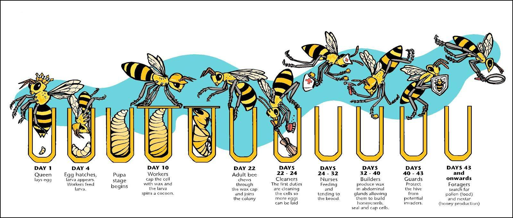

Honey Bee
The Honey bee, or its scientific name, Apis Mellifera, belongs to the genus Apis. The honey bee is one of the most domesticated bees. Honey bees come in three roles, the Queen, the drone, and the worker.
Honey
Honey is a sweet substance made from nectar. When a bee is at a flower, they suck up the nectar into their stomach, through their proboscis, a straw-like tongue. Inside the bee's stomach, the nectar begins to break down. When the worker bee comes back to the hive, it passes the nectar to a house bee. The house bee then puts the nectar into hexagon honey cells. The nectar is then dried by the bees flapping their wings. This honey can be used when the food becomes scarce, like in winter.
Dance
Honey bees communicate through dancing. These dances communicate information about a food source. The waggle dance communicates the direction and distance from a food source. As the bees get closer, they start to perform a round dance to communicate.
Life cycle
A bee's life begins as an egg. depending on if the egg is fertilized or unfertilized, the bee can become a drone or a worker. after 3 days, the egg becomes a larva. The larva is then fed with royal jelly, if a larva is solely fed with royal jelly, it becomes a queen. The larva then becomes a pupa. The pupa starts to develop features of an adult bee. Depending on the bee (in this case, the worker bee). It takes 21 days from being born to emerge as an adult. Then the worker bee goes on to live for about 6 weeks.